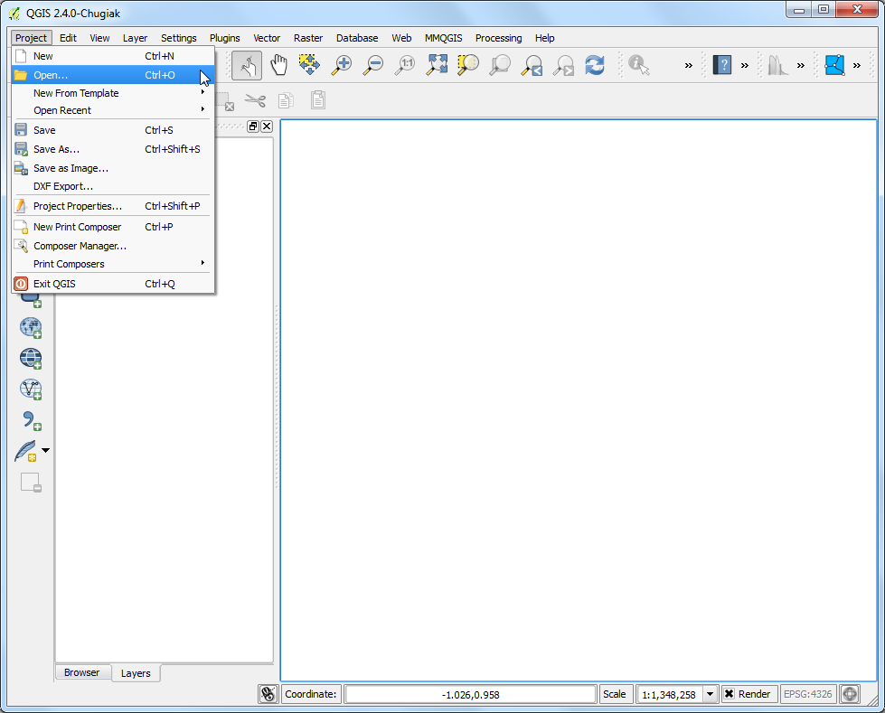
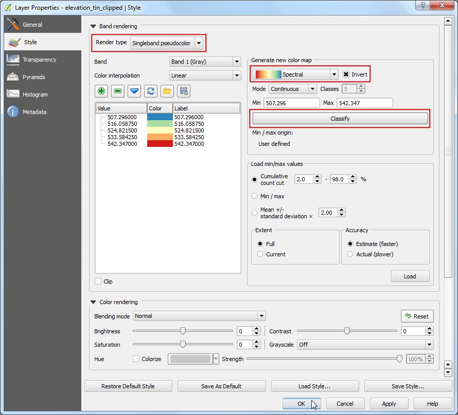
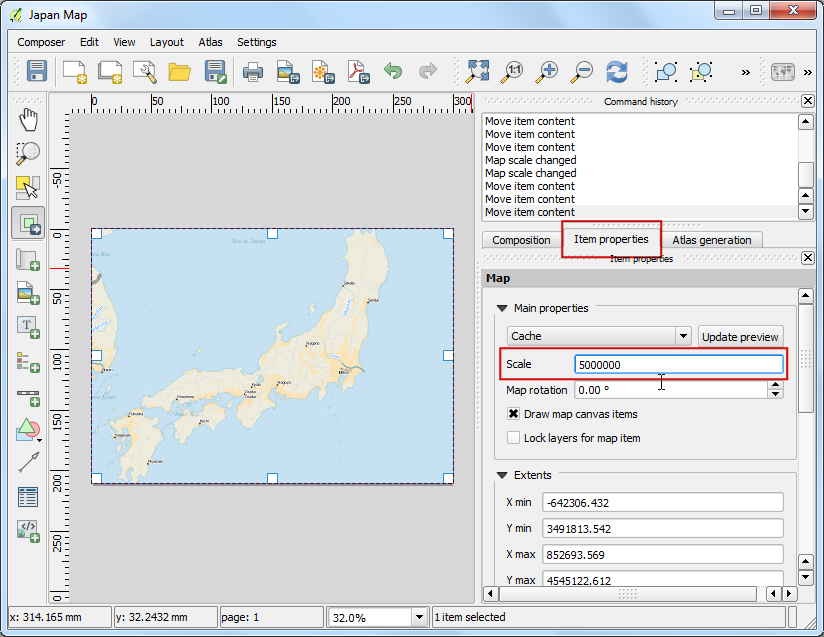

Γεω-αναφορά Τοπογραφικών Φύλλων και Σαρωμένων Χαρτών
[ Download PDF
A4
Letter ]
Τα περισσότερα GIS έργα απαιτούν γεω-αναφορά ορισμένων δεδομένων πλέγματος. Το Georeferencing είναι η διαδικασία της ανάθεσης πραγματικών συντεταγμένων σε κάθε pixel του πλέγματος. Πολλές φορές, αυτές οι συντεταγμένες αποκτούνται μέσω ερευνών πεδίου - η συλλογή συντεταγμένων με μια συσκευή GPS, για λίγα ευκόλως αναγνωρίσιμα χαρακτηριστικά, στην εικόνα ή στον χάρτη. Σε ορισμένες περιπτώσεις, όπου θέλετε να ψηφιοποιήσετε σαρωμένους χάρτες, μπορείτε να αποκτήσετε τις συντεταγμένες από τα σημάδια στην ίδια την εικόνα του χάρτη. Χρησιμοποιώντας αυτά τα δείγματα συντεταγμένων ή τα GCPs ( Ground Control Points ), η εικόνα έχει διπλωθεί και έχει χωρέσει στο επιλεγμένο σύστημα συντεταγμένων. Σε αυτό το tutorial, θα συζητήσουμε τις έννοιες, τις στρατηγικές και τα εργαλεία στο QGIS, για να επιτύχουμε υψηλή ακρίβεια γεω-αναφοράς.
Επισκόπηση εργασίας
Θα χρησιμοποιήσουμε έναν σαρωμένο χάρτη της νότιας Ινδίας από το 1870 και θα κάνουμε τη γεω-αναφορά χρησιμοποιώντας το QGIS.
Άλλες δεξιότητες που θα μάθετε
Διαδικασία
1.Georeferencing in QGIS is done via the ‘Georeferencer GDAL’ plugin. This is a
core plugin - meaning it is already part of your QGIS installation. You just
need to enable it. Go to and enable the Georeferencer GDAL plugin in the
Installed tab. See Χρησιμοποιώντας Πρόσθετες Λειτουργίες for more details on how to
work with plugins.

Το πρόσθετο είναι εγκατεστημένο Raster μενού. Πατήστε το για να ανοίξετε το πρόσθετο.

Το παράθυρο του πρόσθετου είναι χωρισμένο σε 2 περιοχές. Η πάνω περιοχή, είναι εκεί που θα εμφανίζονται τα πλέγματα και η κάτω, είναι εκεί που θα προβάλλεται ένας πίνακας, ο οποίος θα δείχνει τα GCPs.

Τώρα θα ανοίξουμε την JPG εικόνα μας. Πηγαίνετε στο . Αναζητήστε την εικόνα του σαρωμένου χάρτη που κατεβάσαμε και πατήστε Open.

Στην επόμενη οθόνη, θα σας ζητηθεί να επιλέξετε το σύστημα αναφοράς συντεταγμένων (CRS) των πλεγμάτων. Αυτό είναι για να διευκρινίσετε την προβολή και τα δεδομένα των σημείων ελέγχου. Εάν έχετε συλλέξει τα σημεία ελέγχου εδάφους χρησιμοποιώντας μια GPS συσκευή, θα έχετε το WGS84 CRS. Εάν κάνετε γεω-αναφορά ενός σαρωμένου χάρτη όπως τώρα, μπορείτε να αποκτήσετε την CRS πληροφορία απευθείας από τον χάρτη. Βλέποντας την εικόνα του χάρτη μας, οι συντεταγμένες είναι σε Γεωγραφικό Πλάτος/Μήκος. Δε μας δίνεται καμία πληροφορία δεδομένων, οπότε πρέπει να υποθέσουμε μια κατάλληλη. Εφόσον είναι η Ινδία και ο χάρτης είναι αρκετά παλιός, μπορούμε να υποθέσουμε ότι τα δεδομένα Everest 1830 θα μας δώσουν καλά αποτελέσματα.

Θα δείτε ότι η εικόνα θα έχει φορτωθεί στην πάνω περιοχή.

Μπορείτε να χρησιμοποιήσετε τα εργαλεία μεγέθυνση/μετακίνηση στη γραμμή εργαλείων, για να μάθετε περισσότερα για τον χάρτη.

Τώρα πρέπει να αναθέσουμε συντεταγμένες σε μερικά σημεία στον χάρτη. Αν κοιτάξετε πιο προσεκτικά, θα δείτε ένα πλέγμα συντεταγμένων με μαρκαρίσματα. Χρησιμοποιώντας αυτό το πλέγμα, μπορείτε να προσδιορίσετε τις συντεταγμένες Χ και Υ των σημείων, εκεί όπου τα πλέγματα διασταυρώνονται. Πατήστε το Add Point στη γραμμή εργαλείων.

- In the pop-up window, enter the coordinates. Remember that X=longitude and
Y=latitude. Click OK.

Θα παρατηρήσετε, ότι ο πίνακας GCP τώρα έχει μια γραμμή με λεπτομέρειες του πρώτου σας GCP.

Παρομοίως, προσθέστε τουλάχιστον 4 GCPs που θα καλύπτουν ολόκληρη την εικόνα. Όσο πιο πολλά σημεία έχετε, τόσο πιο ακριβής θα είναι η καταχώρηση της εικόνας σας στις συντεταγμένες στόχου.

Μόλις έχετε αρκετά σημεία, πηγαίνετε στο .

Στο παράθυρο διαλόγου:guilabel:Transformation settings, επιλέξτε Transformation type ως Thin Plate Spline. Ονομάστε το αρχείο πλέγματος που θα αποθηκευτεί ως 1870_southern_india_modified.tif. Επιλέξτε EPSG:4326 ως το Target SRS, έτσι ώστε η εικόνα που θα έχουμε ως αποτέλεσμα να είναι σε ευρέως συμβατά δεδομένα. Σιγουρευτείτε ότι το κουτάκι Load in QGIS when done είναι τσεκαρισμένο. Πατήστε OK.

Πίσω στο παράθυρο Georeferencer, πηγαίνετε στο . Αυτό θα ξεκινήσει τη διαδικασία της αναδίπλωσης της εικόνας με τη χρήση των GCPs και τη δημιουργία του πλέγματος - στόχου.

Μόλις τελειώσει η διαδικασία, θα δείτε στο QGIS το επίπεδο στο οποίο έγινε η γεω-αναφορά.

Η γεω-αναφορά έχει τώρα ολοκληρωθεί. Άλλα όπως πάντα, είναι καλή πρακτική να επαληθεύετε την εργασίας σας. Πως θα ελέγξουμε αν η γεω-αναφορά μας είναι ακριβής; Σε αυτήν την περίπτωση, φορτώστε το αρχείο shapefile με τα σύνορα από μια πηγή που εμπιστεύεστε, όπως το σύνολο δεδομένων Natural Earth και συγκρίνετε τα. Θα παρατηρήσετε ότι ταιριάζουν πολύ ωραία. Υπάρχει ένα λάθος και μπορεί να βελτιωθεί περαιτέρω, παίρνοντας περισσότερα σημεία ελέγχου, αλλάζοντας τις παραμέτρους μετασχηματισμού και δοκιμάζοντας διαφορετικά δεδομένα.

{kind=link}
{kind=link}